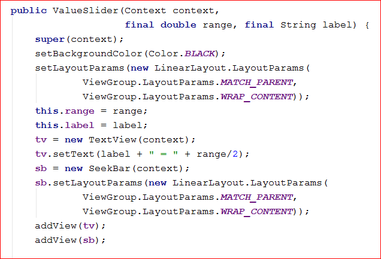

Outline
The solution is split into four classes: a modified version of LissajousView, a new ValueSlider class, an interface called ValueChangeListener and the main activity, in this case called MyActivity.
The diagram above shows that MyActivity creates LissajousView and ValueSlider objects, that each ValueSlider has a reference to a single ValueChangeListener, and that LissajousView implements the ValueChangeListener interface.
ValueSlider
Each ValueSlider object connects a SeekBar with a TextField, as shown below: (sorry about the poor image!)
ValueSliders in my design also know about scaling factors, and the number of significant digits to show after the decimal point. This leads to the following class declaration:
Next we consider the constructor. This is where we'll set up the event handler for the SeekBar, plus of course assigning the instance variables. I've split the constructor into two images below: this is all within the same constructor. First we assign the instance variables and instantiate the TextView and SeekBar, setting up the layout parameters (similar to how they were specified in the XML version).

Next we set up the SeekBar event handler. When a SeekBar is adjusted, we need to calculate the new value by dividing the progress by the range, change the value in the text field, then call the ValueChangeListener to notify it of the new value.
ValueChangeListener
This interface is really simple:
LissajousView
This class is similar to the previous one, except that now the variables are stored in a TreeMap, with the names of the variables set up as static variables. Note the new addition to the init() method where some default values are added to the map.
The other change required is to retrieve the variables from the Map each time the curve is drawn. Hence, the first part of drawTrack now becomes (with the new lines highlighted).
The rest of it remains unchanged.
MyActivity
Compare this to thre previous version and note how compact this one is. In particular note the use of the loop over the set of keys on the vars TreeMap, setting up a ValueSlider for each one, assigning the lissajousView object to listen for events, and adding it to the root layout.
This new version is shorter and makes better use of reusable code, though it took more effort to develop. Was the effort worth it? Discuss ...
end of page